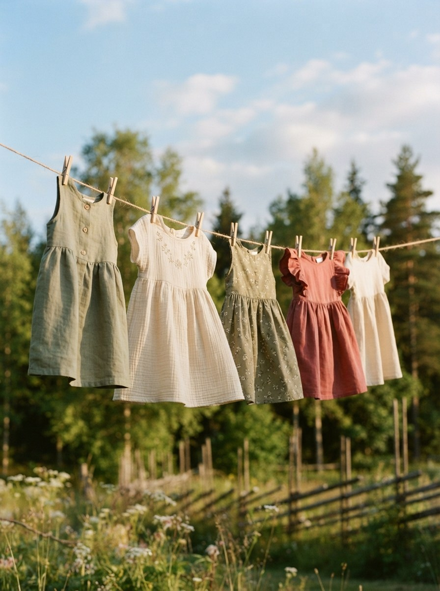

Organic Cotton Kids Wear
やさしい綿と、
育つよろこび。
0〜8歳の子供たちのための、肌にやさしいオーガニックコットン子供服。
毎日をのびのびと、すこやかに。

Concept
育ちざかりの肌に、
育ちざかりの肌に、
いちばん近い服を。
COTTON DAYS(コットンデイズ)は、「毎日着るものだから、素材にこだわりたい」という想いから生まれたオーガニックコットン子供服ブランドです。
動きやすいゆったりシルエットと、洗うほどになじむやわらかな風合いで、遊び盛りの子供たちの毎日にそっと寄り添います。
- Material
- オーガニックコットン100%(GOTS認証)
- Size
- 0〜8歳(サイズ 70〜130)対応
- Design
- 男の子にも女の子にも合う、シンプルなデザイン
Category
カテゴリから探す
年齢やアイテムから、お子さまにぴったりの一着を見つけてください。
Shop
商品一覧
表示価格はすべて税込です。※本サイトはデモのため、実際の購入・決済は行われません。
Our Promise
安心して着せられる、
安心して着せられる、
3つのこだわり。
-
GOTS認証オーガニックコットン
農薬や化学肥料に頼らずに栽培された、国際基準GOTS認証のオーガニックコットンのみを使用しています。
-
縫製・洗濯テスト済み
縫い目の強度や色落ちを複数回の洗濯テストで確認。よく動く子供たちにも安心の丈夫さです。
-
ギフト包装に対応
出産祝いや誕生日プレゼントに。ご注文時に無料のギフトラッピングをお選びいただけます(デモ)。
送料
¥6,000以上のご購入で送料無料
(通常送料 ¥550)
交換・返品
商品到着後7日以内、未使用に限り
交換・返品を承ります
サイズ選び
各商品ページのサイズ表を
ご参照ください
お問い合わせ
平日10:00-17:00
info@cottondays.example(デモ)